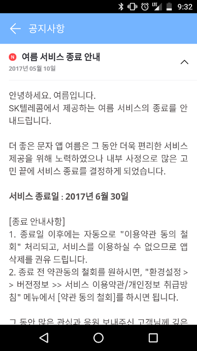

여름이라는 앱이 종료되었다. 그렇게 많이 알려진 앱은 아니지만, SK텔레콤에서 제공했던 문자 앱이다. 구글에 '여름 문자 대체'를 검색해보면 꽤 많은 사람들이 이 앱을 잘 쓰고 있었음을 알 수 있다. 물론 나도 그 중의 한 사람이다.
나는 넥서스5라는 기기를 사용하고 있는데, 구글에서 제공해주는 기본 문자앱이 영 마음에 들지 않아서 다른 문자앱을 찾아보고 있었는데, 다들 고만고만하기도 하고, 외국 앱이 우리나라의 MMS를 제대로 지원해주지 않을 것같고, T전화를 워낙 만족스럽게 쓰고 있었기 때문에 같은 회사에서 나온 '여름' 앱을 골랐었다. 그런데 앱 서비스가 종료되었다.
사실 "T전화"가 꽤 인기가 있다. 기본적인 스팸 관리 기능이 사용자들에게 좋은 평가를 얻고 있으면서, SKT외에도 다른 사용자들에게도 사용하게 해준게 꽤 좋은 평가를 얻고 있는게 아닌가 싶다. 그래서 여름앱을 만족스럽게 쓰면서 자연스레 "이거 SKT에서 통신사의 새로운 기준을 제시하겠구나"라는 생각이 들었었다. 바로, 통신사에서 제일 잘할 수 있는, "전화와 문자 서비스"를 제대로 짚었기 때문이었다.
T전화와 여름앱은 SKT에서 만들었지만, 모든 통신사들에서 쓸 수 있었다. 삼성에서 만든 휴대폰이든, LG, 구글에서 만든 휴대폰이든 SKT, KT, LGT를 쓰든, 모든 안드로이드 폰이 이 앱을 사용할 수 있었다. 정말 제대로 잘 만든다면, 전세계 모든 안드로이드 앱의 전화와 문자앱을 SKT에서 먹어버릴 수 있는 상황이었다. 특히 T전화는 삼성에서도 T전화를 벤치마킹한다는 말이 나올 정도였다.
만약 이렇게 계속 영향력을 넓혀서 문자 시장에서도 최고자리를 차지한다면, 자연스럽게 다른 앱으로 영향력을 넓힐 수 있을 것이었다. 예를 들면, 구글의 inbox처럼 문자를 할 일 목록처럼 관리해서 개인비서나 노트앱 시장을 노려본다와 같은 시도를 해볼 수 있었을 것이다.
사실 딱히 돈이 안되고, 당장 눈에 보이는 성과가 없으니 서비스를 종료하지 않았나하는 생각이 든다. 특히 문자 시장은 저물어가는 시장으로 인식되어서 그런가 싶다. 하지만 이 상황에서도 통신사가 본의아니게 우위를 점하고 있는게 사실 전화와 문자이다. 역설적이지만, 카카오톡과 같은 메신저들이 득세를 해도 모든 휴대폰에는 문자앱이 설치되어 있다. 그리고 아직까지는 많은 서비스들(카드 결제 알림, 공과금 안내 등)이 문자를 통해서 이루어지고 있다. 앞에서 얘기한 것처럼 T전화가 전화 서비스를 제대로 제공하고 사용자들에게 다가가는데 성공했다면, 자연스레 문자앱 시장에서도 성공하는게 당연한 수순으로 보였다.
한국 통신사에서 재미난 사업 방향을 제시한 것 같았는데 아니어서 아쉽고, 사용자 입장에서 괜찮은 앱 하나가 사라져서 아쉽다. 여름 앱의 종료는 정말 아쉽다.